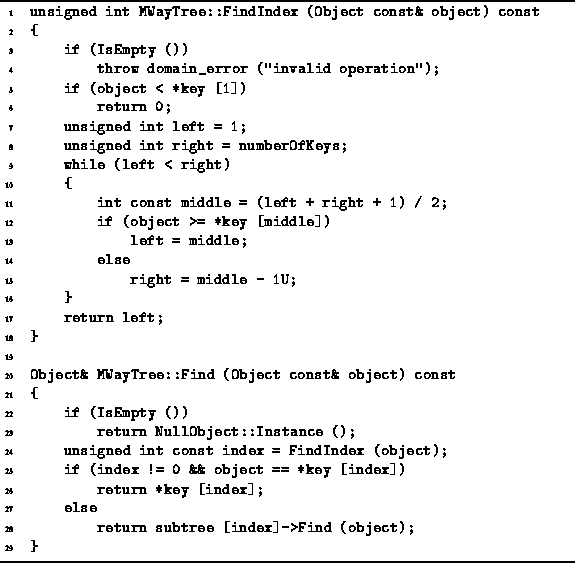
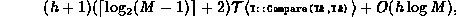

Data Structures and Algorithms
with Object-Oriented Design Patterns in C++
Data Structures and Algorithms
with Object-Oriented Design Patterns in C++
We can improve the performance of the M-way search tree
search algorithm by recognizing that
since the keys are kept in a sorted array,
we can do a binary search rather than a linear search.
Program  gives an alternate implementation
for the Find member function of the MWayTree class.
This routine makes use of the private member function FindIndex
which does the actual binary search.
gives an alternate implementation
for the Find member function of the MWayTree class.
This routine makes use of the private member function FindIndex
which does the actual binary search.

Program: MWayTree Class FindIndex and Find Member Function Definitions (Binary Search)
The FindIndex member function takes as its lone argument
a const reference to an Object instance, say x,
and returns an unsigned int in the range between 0 and n-1,
where n is the number of subtrees of the given node.
The result is the largest integer i, if it exists,
such that  where
where  is the
is the  key.
Otherwise, it returns the value 0.
key.
Otherwise, it returns the value 0.
FindIndex determines its result by doing a binary search.
In the worst case,
 iterations of the main loop (lines 9-16)
are required to determine the correct index.
One object comparison is done before the loop (line 5)
and one comparison is done in each loop iteration (line 12).
Therefore, the running time of the FindIndex function is
iterations of the main loop (lines 9-16)
are required to determine the correct index.
One object comparison is done before the loop (line 5)
and one comparison is done in each loop iteration (line 12).
Therefore, the running time of the FindIndex function is
If  , this simplifies to
, this simplifies to  .
.
The Find member function of the MWayTree class
does the actual search.
It calls FindIndex to
determine largest integer i, if it exists,
such that  where
where  is the
is the  key (line 24).
If it turns out that
key (line 24).
If it turns out that  , then the search is done (lines 25-26).
Otherwise, Find calls itself recursively
to search subtree
, then the search is done (lines 25-26).
Otherwise, Find calls itself recursively
to search subtree  (line 28).
(line 28).
Consider a search in an M-way search tree. The running time of the second version of Find is

where h is the height of the tree and
regardless of whether the search is successful.
If the tree is balanced and  ,
then the running time of Program
is simply
,
then the running time of Program
is simply  ,
where K is the number of keys in the tree.
,
where K is the number of keys in the tree.
 Copyright © 1997 by Bruno R. Preiss, P.Eng. All rights reserved.
Copyright © 1997 by Bruno R. Preiss, P.Eng. All rights reserved.